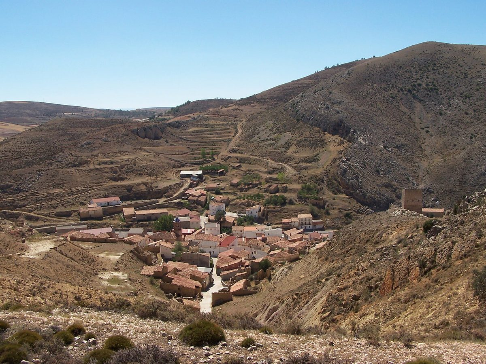

스페인 테루엘 부에냐 에너지 협동조합, 면사무소·주민단체도 조합원…아라곤 첫 '실물 배터리' 공동자가소비 가동 준비

조합원 14명, 태양광 40kW로 계량기 20개 넘게 묶어…약 10만 유로 들여 설비 마쳤지만 배전회사 연결 승인 두 번 무산, 남는 전기 판매 수익은 주민단체가 받아 마을 사회사업에
스페인 아라곤 지방 테루엘도의 마을 부에냐(Bueña)에서 주민들이 꾸린 에너지 협동조합 '부에냐 에너지공동체'가 쓰고 남은 낮 전기를 실물 배터리에 저장하는 공동자가소비 설비를 갖추고 가동을 준비하고 있으며, 문을 열면 아라곤에서 실물 배터리를 갖추고 출발하는 첫 에너지공동체가 될 것으로 알려졌다. 로사 마리아 루비오 조합장에 따르면 조합원은 14명으로 부에냐 면(Ayuntamiento de Bueña)과 주민단체 아부에니사테(Abueñízate)도 조합원이며, 조합원들은 남는 전기를 전력망에 팔아 생기는 돈을 아부에니사테가 받아 마을로 돌아가는 사회 목적에 쓰기로 합의했다. 설비는 조합원 한 명의 건물 지붕을 빌려 올린 최대 출력 40kW 태양광으로 계량기 20개 넘게를 묶는 계통 연계형이며, 인버터와 배터리까지 설치를 마쳤고, 조합이 사들인 땅의 옛 건초 창고를 고쳐 변압기를 들이고 옹벽을 쌓아 그 지붕은 나중에 용량을 늘릴 때 쓸 계획이다. 사업비는 약 10만 유로로 태양광 설비에 5만 유로 넘게, 계통 연결에 1만5,000유로 넘게 들었고, 테루엘 도와 스페인 에너지다변화절약연구소(IDAE)의 공동자가소비·시민참여 지원 사업 'C 임플레멘타(C Implementa)'에서 보조를 받았다. 걸림돌은 배전회사의 계통 연결 승인으로 앞서 두 차례 무산돼 세 번째 결정을 기다리고 있으며, 기술 자문을 맡은 업체 옵티메너(Optimener)의 카를로스 아리녜스는 "사업은 다 끝났다"며 연결 조건이 정해지고 공사를 마치면 1년 안에 가동할 수 있을 것으로 내다봤다. 옵티메너는 태양광과 배터리, 전력망 전기 사용을 조율하는 앱도 개발하고 있으며, 배터리 용량과 조합원 출자액은 알려지지 않았다.
시민에너지 관점
설비를 다 갖추고도 배전회사 연결 승인이 두 번 무산돼 세 번째 결정을 기다리는 부에냐의 처지는, 작은 마을 에너지공동체의 가장 높은 벽이 돈이나 기술보다 전력망 문턱이라는 것을 보여 준다. 작은 마을이 감당하기에는 제도와 절차가 너무 복잡하다는 우려가 나올 수 있지만, 스페인은 2018년 이른바 '햇빛세'를 없애고 2019년 왕령(RD 244/2019)으로 이웃끼리 전기를 나눠 쓰는 공동자가소비의 길을 열었고, 그 제도 위에서 면사무소와 주민단체, 주민이 한 조합에 함께 드는 구조가 가능해졌다. 판매 수익을 주민단체에 맡겨 마을 사회사업에 쓰기로 한 규칙은 발전소의 이익이 출자자 몇 사람이 아니라 마을 전체로 돌아가게 하는 설계다. 우리도 마을 햇빛발전이 계통 연결 대기에 묶이지 않도록 공동체 사업의 연계 절차와 기한을 제도로 정하고, 지자체가 조합원으로 함께 서는 길을 넓혀야 한다.
출처: Diario de Teruel 2026-10-28 José Luis Rubio 원문 보기
スペイン・テルエルのブエニャ・エネルギー協同組合、村役場と住民団体も組合員…アラゴン初の「実物バッテリー」共同自家消費の稼働を準備
組合員14人、太陽光40kWで20を超える電力メーターを束ねる…約10万ユーロで設備は完成も配電会社の接続承認は2度不成立、余剰電力の売電収益は住民団体が受け取り村の社会事業に
スペイン・アラゴン州テルエル県の村ブエニャ（Bueña）で、住民がつくったエネルギー協同組合「ブエニャ・エネルギー共同体」が、使い切れなかった昼間の電気を実物のバッテリーにためる共同自家消費の設備を整えて稼働の準備を進めており、動き出せばアラゴンで実物バッテリーを備えてスタートする初のエネルギー共同体になるとされる。ロサ・マリア・ルビオ組合長によると組合員は14人で、ブエニャ村役場（Ayuntamiento de Bueña）と住民団体アブエニサテ（Abueñízate）も組合員であり、組合員たちは余った電気を電力網に売って得たお金をアブエニサテが受け取り、村に還元される社会的な目的に使うことで合意した。設備は組合員1人の建物の屋根を借りて載せた最大出力40kWの太陽光で、20を超える電力メーターを束ねる系統連系型であり、インバーターとバッテリーまで設置を終えたうえ、組合が買い取った土地の古い干し草小屋を改修して変圧器を入れ、擁壁を築いて、その屋根は将来容量を増やす際に使う計画だ。事業費は約10万ユーロで、太陽光設備に5万ユーロ超、系統接続に1万5,000ユーロ超がかかり、テルエル県とスペインのエネルギー多様化・節約研究所（IDAE）による共同自家消費・市民参加の支援事業「C インプレメンタ（C Implementa）」から補助を受けた。障害は配電会社の系統接続承認で、これまで2度不成立となり3度目の決定を待っており、技術支援を担う企業オプティメネル（Optimener）のカルロス・アリニェス氏は「事業はもう終わっています」と述べ、接続条件が決まり工事を終えれば1年以内に稼働できるとの見通しを示した。オプティメネルは太陽光、バッテリー、電力網の電気の使い方を調整するアプリも開発しており、バッテリー容量や組合員の出資額は明らかになっていない。
市民エネルギーの視点
設備をすべて整えながら配電会社の接続承認が2度不成立となり、3度目の決定を待つブエニャの状況は、小さな村のエネルギー共同体にとって最も高い壁が資金や技術よりも電力網の敷居であることを示している。小さな村が担うには制度や手続きが複雑すぎるという懸念もありうるが、スペインは2018年にいわゆる「太陽税」を廃止し、2019年の勅令（RD 244/2019）で近隣同士が電気を分け合う共同自家消費の道を開き、その制度の上で村役場と住民団体、住民が一つの組合に加わる仕組みが可能になった。売電収益を住民団体に託して村の社会事業に使うという規則は、発電所の利益が一部の出資者ではなく村全体に戻るようにする設計だ。韓国でも村の太陽光発電が系統接続の待機に縛られないよう、コミュニティ事業の連系手続きと期限を制度で定め、自治体が組合員として共に立つ道を広げるべきだ。
出典: Diario de Teruel 2026-10-28 José Luis Rubio 原文を読む
西班牙特鲁埃尔布埃尼亚能源合作社，村政府和居民团体也是社员…筹备阿拉贡首个配备"实体电池"的集体自发自用项目
社员14名，40kW光伏连接20多块电表…投入约10万欧元完成设施，但配电公司并网审批两次落空，余电销售收益由居民团体领取用于村里的社会事业
西班牙阿拉贡自治区特鲁埃尔省布埃尼亚村（Bueña）居民组建的能源合作社"布埃尼亚能源共同体"，已建成把白天用不完的电储存在实体电池里的集体自发自用设施，正在筹备投运；据悉投运后将成为阿拉贡首个配备实体电池起步的能源共同体。据合作社主席罗莎·玛丽亚·鲁维奥介绍，合作社现有社员14名，布埃尼亚村政府（Ayuntamiento de Bueña）和居民团体"阿布埃尼萨特"（Abueñízate）也是社员；社员们商定，把余电卖给电网所得的钱交给阿布埃尼萨特，用于回馈本村的社会目的。设施是租用一名社员建筑屋顶安装的峰值40kW光伏，以并网方式连接20多块电表，逆变器和电池均已安装完毕；合作社还买下一块地，把原有的旧干草棚改造后放入变压器并修建挡土墙，计划将来扩容时利用棚顶。项目总投入约10万欧元，其中光伏设施超过5万欧元、并网超过1万5,000欧元，获得特鲁埃尔省政府和西班牙能源多样化与节约研究所（IDAE）支持集体自发自用和公民参与的"C Implementa"项目补助。障碍在于配电公司的并网审批，此前两次未果，目前正在等待第三次决定；负责技术咨询的Optimener公司的卡洛斯·阿里涅斯说"项目已经完工"，预计并网条件确定、工程完成后一年内即可投运。Optimener还在开发协调光伏、电池和电网用电的应用程序，电池容量和社员出资额尚未公布。
市民能源视角
设施全部到位，配电公司并网审批却两次落空、仍在等第三次决定，布埃尼亚的处境说明，小村庄能源共同体面前最高的墙不是资金或技术，而是电网门槛。也许有人担心制度和程序太复杂，小村庄难以应付，但西班牙在2018年取消了所谓"太阳税"，2019年又以王室法令（RD 244/2019）打开了邻里分享用电的集体自发自用之路，正是在这一制度上，村政府、居民团体和居民共同加入一个合作社的结构才成为可能。把售电收益交给居民团体用于村里社会事业的规则，是让电站收益回到全村而不是少数出资者手中的设计。韩国也应以制度规定社区项目的并网程序和期限，让村庄光伏不再困于并网等待，并拓宽地方政府作为社员共同参与的道路。
来源: Diario de Teruel 2026-10-28 José Luis Rubio 查看原文
Bueña energy co-operative in Teruel, Spain, counts town council and residents' association among members as it prepares Aragon's first collective self-consumption scheme with physical batteries
14 members, 40kW of solar serving more than 20 meters; installation finished at a cost of about €100,000, but two grid-connection decisions by the distributor have fallen through, and surplus-sale income will go to a residents' association for village social projects
The Bueña Energy Community, a co-operative set up by residents of the village of Bueña in the province of Teruel, Aragon, has installed a collective self-consumption system that stores unused daytime solar power in physical batteries and is preparing to start operating, which would make it the first energy community in Aragon to launch with physical batteries. According to its president, Rosa María Rubio, the co-operative has 14 members, including Bueña town council (Ayuntamiento de Bueña) and the residents' association Abueñízate, and members have agreed that money earned from selling surplus power to the grid will go to Abueñízate to be spent on social purposes that benefit the village. The system is a grid-connected 40kW-peak solar array on the roof of a building rented from one member, serving more than 20 electricity meters, with the inverter and batteries already in place; the co-operative also bought a plot of land, built a retaining wall and converted an old hay barn there to house the transformers, with its roof earmarked for future expansion. The project cost about €100,000 — more than €50,000 for the solar installation and more than €15,000 for the grid connection — and was supported by Teruel provincial council and the C Implementa programme of Spain's Institute for Energy Diversification and Saving (IDAE), which backs collective self-consumption and citizen participation. The sticking point is grid connection: two authorisations from the distribution company have fallen through and the co-operative is awaiting a third decision, and Carlos Aríñez of Optimener, the firm providing technical advice, said "the project is finished," expecting it to run within a year once connection conditions are set and the work is done. Optimener is also developing an app to balance the use of solar, battery and grid electricity; battery capacity and members' investment have not been disclosed.
Citizen Energy View
A village whose installation is complete yet still waiting on a third grid-connection decision after two failed ones shows that the highest barrier for small energy communities is not money or technology but the threshold of the grid. Some may worry that the rules and procedures are too complex for a small village, but Spain scrapped its so-called "sun tax" in 2018 and opened the way for neighbours to share electricity through collective self-consumption by royal decree (RD 244/2019) in 2019, and it is on that framework that a town council, a residents' association and residents can join one co-operative. The rule that hands sales income to a residents' association for village projects is a design that returns a power plant's value to the whole village rather than to a few investors. Korea, too, should set grid-connection procedures and deadlines for community projects in law so village solar is not stuck in the queue, and widen the path for local governments to stand alongside residents as co-op members.
Source: Diario de Teruel 2026-10-28 José Luis Rubio Read the original